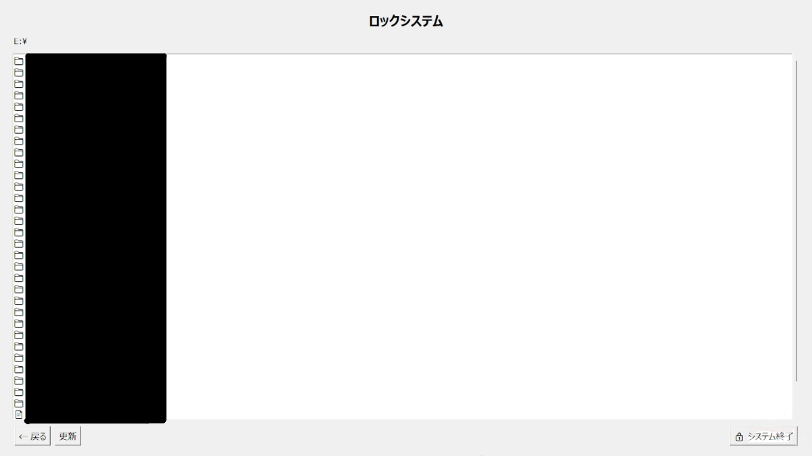

画面ロック

制作年：2026
使用技術：Python
＜概要＞
画面をロックし、コマンドなども防ぐ
起動時に指定したファイルの中身しか見れない（操作できない）
＜工夫した点＞
WindowsキーとDのような入力にフックをかけてできないようにした点
指定したフォルダの中は見れる、実行できるようにした点

制作年：2026
使用技術：Python
画面をロックし、コマンドなども防ぐ
起動時に指定したファイルの中身しか見れない（操作できない）
WindowsキーとDのような入力にフックをかけてできないようにした点
指定したフォルダの中は見れる、実行できるようにした点